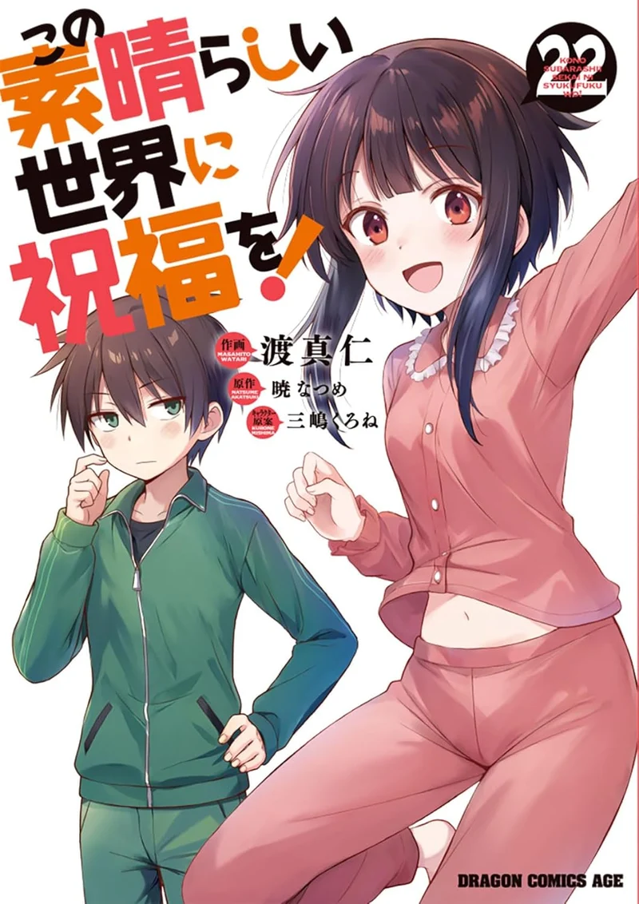
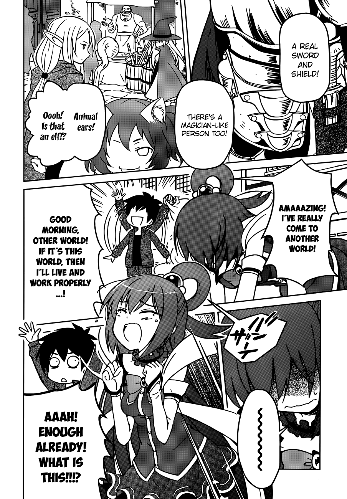

Kono Subarashii Sekai ni Shukufuku wo!
by Natsume Akatsuki
Synopsis
After an embarrassing death, Kazuma Satou finds himself in a fantasy world where he can begin a new life. He chooses the goddess Aqua to accompany him, but his adventure quickly becomes a chaotic comedy of bad decisions, strange companions, and unexpected troubles. Alongside the powerful yet troublesome Aqua, the explosive mage Megumin, and the crusader Darkness, Kazuma tries to earn money and survive his ridiculous new life.
Chapter 1

Kazuma Satou's ordinary life takes an unexpected turn when he encounters a goddess named Aqua after his death. Given the opportunity to enter a fantasy world, he decides to bring Aqua along, hoping that his new adventure will be full of excitement and rewards.
However, life in this world is far from easy. Kazuma and Aqua struggle to earn money and find their place among adventurers. Their journey soon introduces them to unusual companions and absurd situations, turning their quest into a comedy of friendship, magic, and misfortune.
— End of chapter —